Answers to Trivia April 2024
20 Questions 178 Points
Part 1: 65 Points
Part 2: 113 Points
Part 1
Coffee
1.
Rank the following nations from most coffee consumption per capita to least. (1 Point Each)
A. New Zealand 13.34 kg/person
B. Estonia 16.8 kg/person
C. United States 4.71 kg/person
D. Finland 11.2 kg/person
E. Ethiopia 1.17 kg/person
B > A > D > C > E
Research
2. Match the Antarctica base/research institute to it’s home country (1 Point Each).
2A.
Brazil
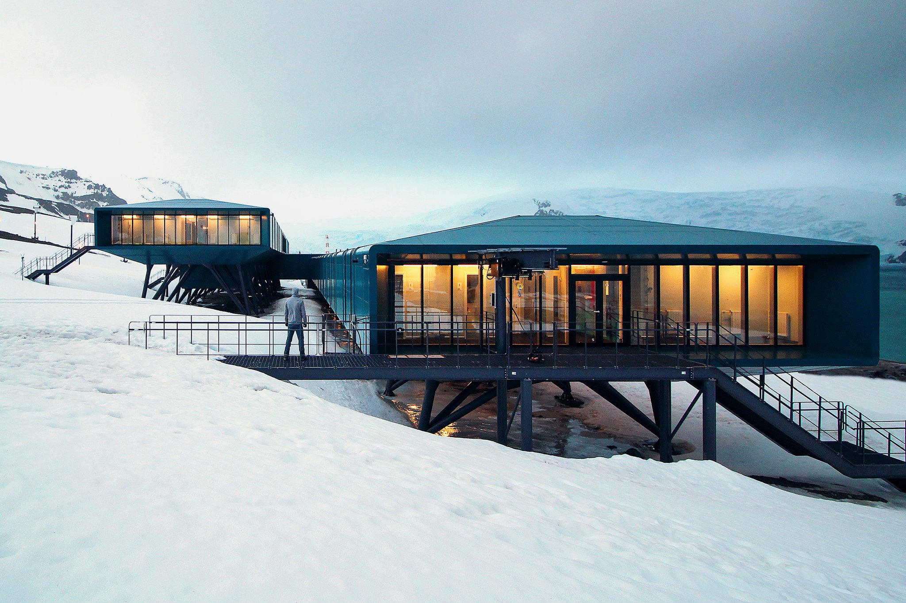2B.
South Korea
2C.
China
2D.
U.K.
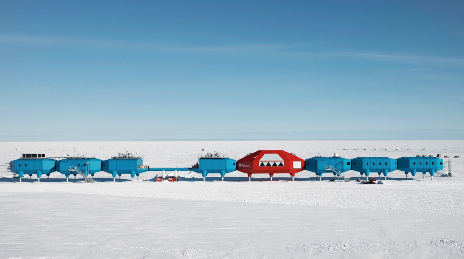2E.
Germany
Companies
3. For each of the following lists of companies, name the state where all of the companies were founded (2 Points Each)
A. Abercrombie & Fitch, IBM, Verizon, Barnes & Noble, MTV – New York
B. Panera, AMC Theaters, H&R Block, Budweiser, Enterprise Rent-A-Car – Missouri
C. P&G (Procter and Gamble), Arby’s, Wendy’s, Goodyear Tire, Office Max, Kroger – Ohio
D. Gamestop, Whole Foods, Dr Pepper, Frito-Lay, 7-Eleven, Six Flags, Dell – Texas
Names
4. Match the placeholder name (John Doe) to the country that uses it (1 Point Each)
A. Netherlands – Jan Jansen
B. France – Jean Dupont
C. Germany – Max Mustermann
D. Serbia – Petar Petrović
E. Czech Republic – Jan Novák
Agriculture
5. Match the map of county crop production to the crop (1 Point Each).
5A.
Tomatoes
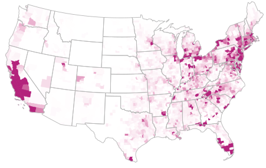5B.
Wheat
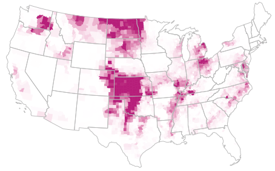5C.
Sunflowers
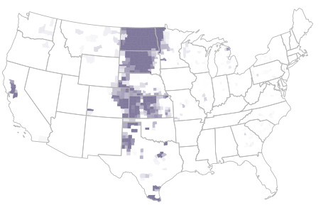5D.
Apples
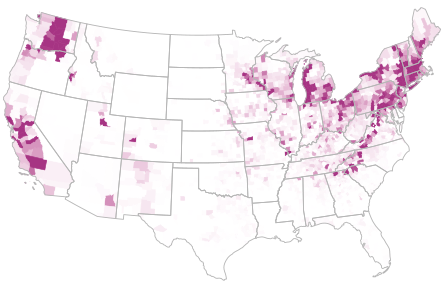5E.
Grapes
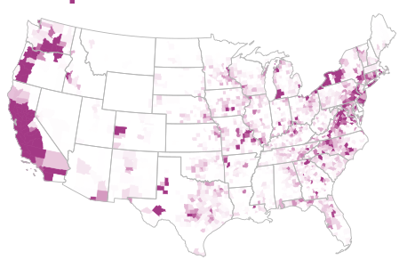Traffic
6. Order the following rush hour (weekday 5:00 PM) journeys from longest travel time to shortest (1 Point Each).
6A.
Los Angeles: LAX -> Staples Center/Crypto.com Arena (17.1 miles) 50 min
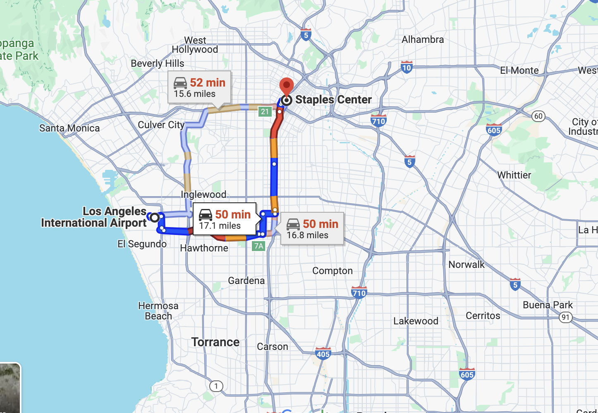6B.
Boston: Paul Revere House -> Harvard Square (5.2 miles) 30 min
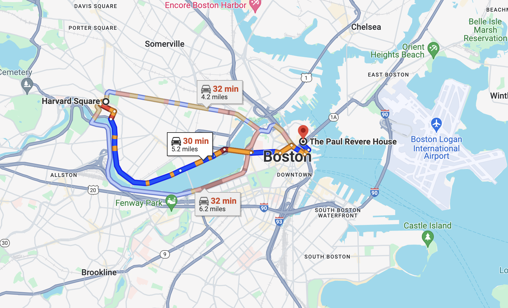6C.
D.C.: Nationals Park -> CIA Headquarters (12.1 miles) 40 min
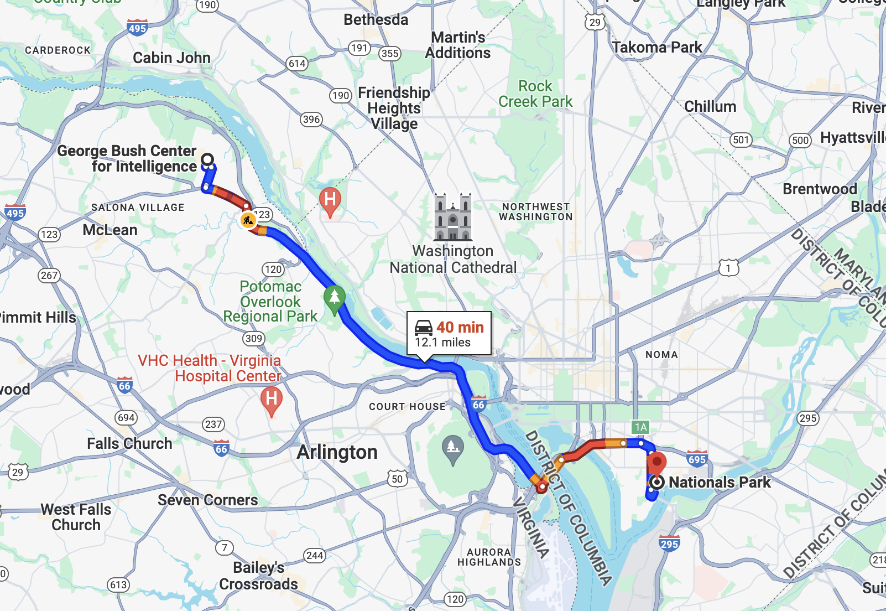6D.
NYC: Empire State Building -> Yankee Stadium (8.6 miles) 38 min
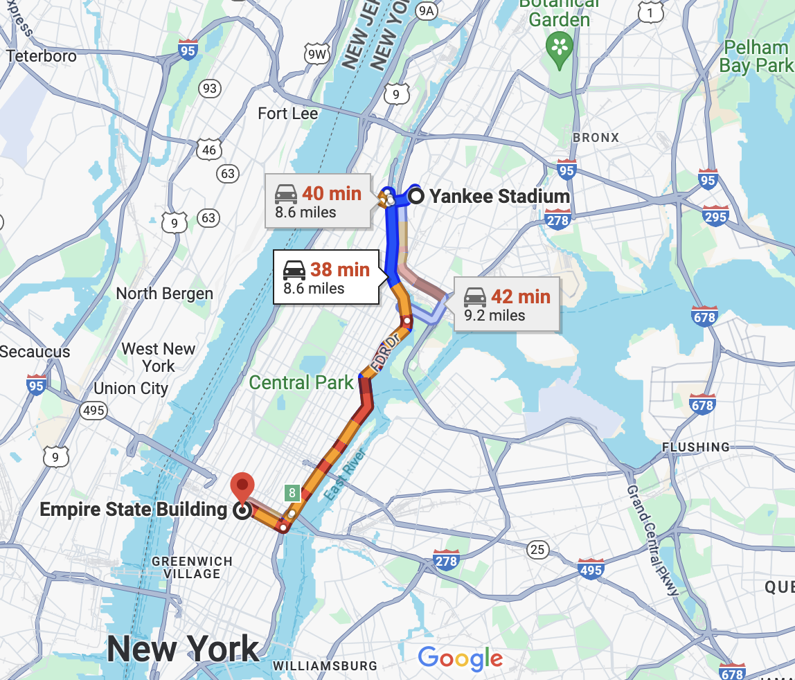LA > D.C. >= NYC > Boston
Famous Crime
7. Match the famous actor to their criminal history (1 Point Each)
7A.
assaulted a Vietnamese-American man on the street, calling him a “Vietnam fucking shit” & knocking him unconscious with a large stick. Later that same day he attacked another Vietnamese-American, punching him in the eye
7B.
was arrested for possession of heroin, cocaine, crack and an unloaded .357 Magnum handgun while he was speeding
7C.
was arrested at the Airport for possession of over 1.43 lb of cocaine
7D.
was charged in Los Angeles on drunk driving charges, after failing a field sobriety test. It was their fourth DUI charge
Where in the World
8. Guess the country that contains each of the following (3 Points Each)
8A. The world’s tallest statue
India
8B. The world’s largest airport
Saudi Arabia
8C. The world’ biggest shopping mall
Iran

8D. The world’s second tallest building
Malaysia
8E. The world’s largest dam
Pakistan
Alchemy
9. Identify the industry for each company in the table (1 Point Each)
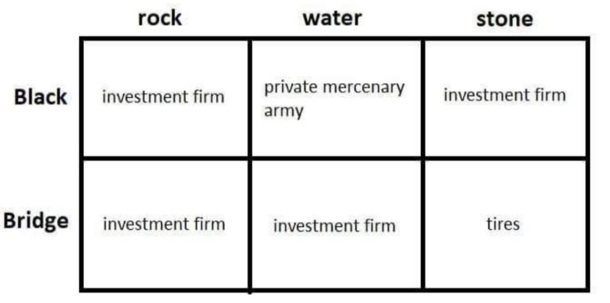Democracy
10. Guess the following vote shares for the 2020 Presidential Election (CNN exit polling) (2 Points Each)
A. Trump won what % of voters who identify as “Moderate” (poll options were, Liberal, Moderate, Conservative) – 34% (31-37)
B. Trump won what % of “White” voters – 58% (55-61)
C. Biden won what % of “White, college degree” voters – 51% (48-54)
D. Biden won what % of “No religious affiliation” voters – 65% (62-68)
Part 2
Quotes
11. For each of the following quotes, is it from Optimus Prime or Che Guevara (1 Point Each)?
A. “We’ve suffered losses, but we’ve not lost the war.” – Optimus
B. “I have a wish. It as a fear as well - that in my end will be my beginning.” – Che Guevara
C. “I will never stop fighting for our freedom.” – Optimus
D. “Even if you defeat me…others will rise to defeat your tyranny.” – Optimus
E. “Do not forget what you have learned from our past…From it’s lessons, the future is forged.” – Optimus
F. “There’s a thin line between being a hero, and being a memory.” – Optimus
G. “Fate rarely calls upon as at a moment of our choosing.” – Optimus
H. “We cannot be sure of having something to live for unless we are willing to die for it.” – Che Guevara
Inflation
12. Convert each amount to nominal dollars (current value - April 2024) (2 Points Each)
A. $1,000 in 2000 – $1,838 (1,746 - 1,929)
B. $1,000 in 1990 – $2,435 (2,313 - 2,556)
C. $1 in 1933 – $24 (22 - 26)
D. $100,000 in 1968 – $910,046 (864,543 - 955,548)
Six Degrees of Separation
13. Connect the actors by films they share a collaborator with
Example, connect Meryl Streep to The Rock. This is a possible answer, that is 3 degrees of separation as each movie is a degree:
Meryl Streep (Don’t Look Up) Leo DiCaprio
Leo DiCaprio (The Departed) Mark Wahlberg
Mark Wahlberg (The Other Guys) The Rock
Connect Alan Rickman to Jacob Elordi in as few degrees as possible
Scoring: 6 Degrees: 1 Point, +2 Points for each fewer degree
Example Answer: 2 Degrees (9 Points)
Alan Rickman (Dogma) Ben Affleck
Ben Affleck (Deep Water) Jacob Elordi
First Name Last Name
14. Given each clue, solve the word puzzle where the last word of each answer is the first word of the next answer (1 Point Each)
A. Academy Award winning British director famous for imax movies and nonlinear stories
B. Famed baseball pitcher, known for his fastball and career longevity
C. Phillies home run slugger from 2004-2016, also a character from The Office
D. 2004 Democratic presidential nominee who had his political career derailed by a single scream
E. Singer & actor from the 1950s. Known for friendship with Frank Sinatra and Sammy Davis Jr., who together with others formed the Rat Pack.
F. 74 year old comedic actor starring in a Hulu series with another older comedic actor and Selena Gomez
G. Indiana Jones’ sidekick
Christopher Nolan Ryan Howard Dean Martin Short Round
Guess The Data
15. Identify the data being shown on the map (5 Points)
Time
16. Order the following world records for competitive eating from longest time to shortest time (1 Point Each)
A. 4 32-ounce bowls of mayonnaise – 8 minutes
B. 121 Twinkies – 6 minutes (Joey Chestnut)
C. 29 Waffles (8 oz) – 10 minutes
D. 48 Oreos and Half a Gallon of Whole Milk – 2 minutes 28 seconds
Popularity
17. For each of the following charts of google search trends, identify the search term from the chart (3 Points Each)
17A.
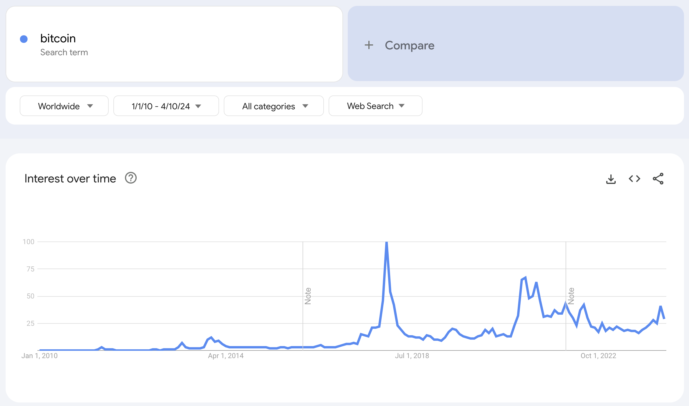17B.
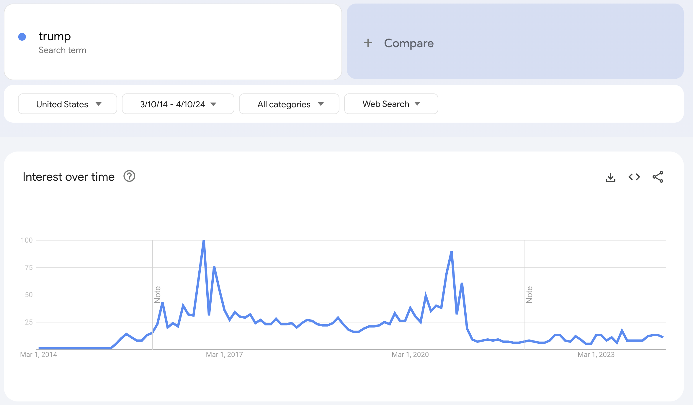17C.
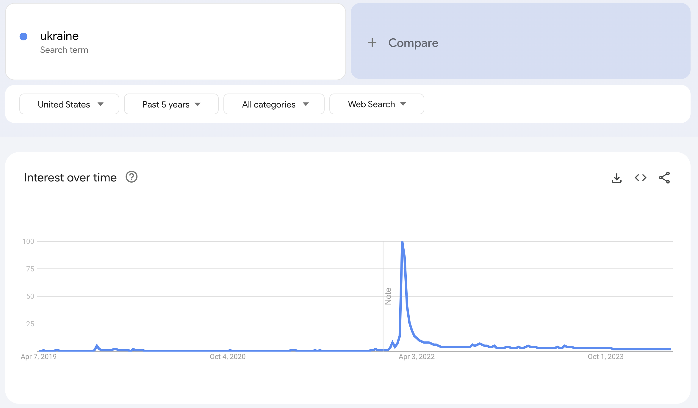17D.
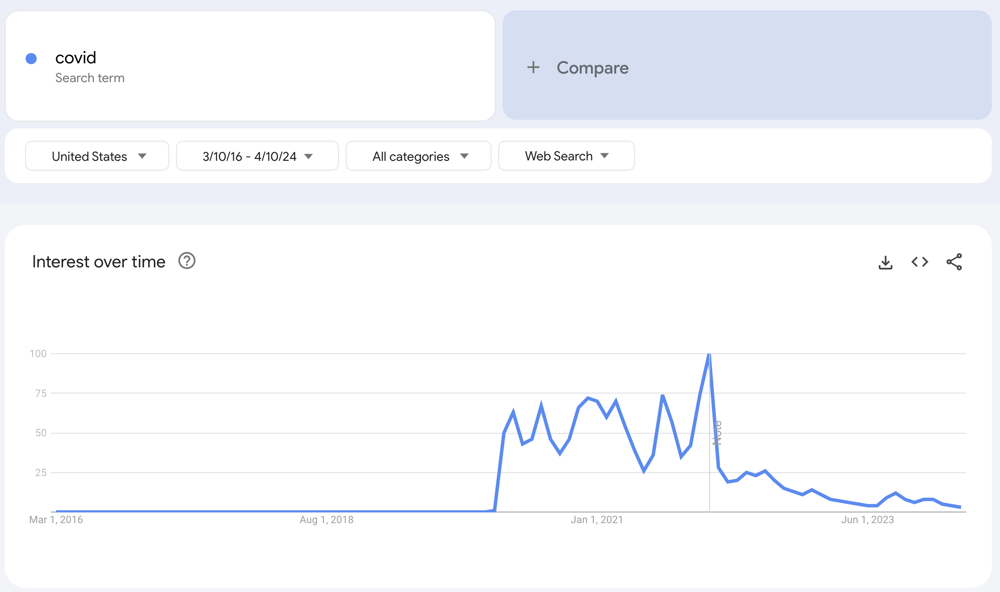Bird’s Eye View
18. Identify the famous international place from the satelitte photo (5 Points)
Machu Picchu
Visual Pun
19. The following four image collage is a visual pun. Guess what each image represents for 3 Points, and then what the category is that connects them for an additional 3 Points. (15 Points Total)
Whiskey, Foxtrot, Tango, Echo – NATO Phonetic Alphabet
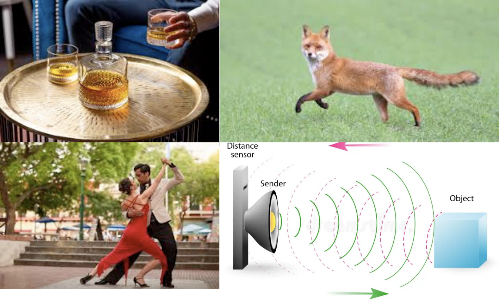Soundtracks
20.
You will listen to brief snippets of three different songs, each of which features prominently in a famous movie.
For 1 Point name the artist for each song
For 1 Point name the title of each song
For 4 Points name the movie
(10 Points Each)
20A.
Bob Dylan - The Man in Me
Gipsy Kings - Hotel California (Spanish Mix)
Kenny Rogers & The First Edition - Just Dropped In (To See What Condition My Condition Is In)
20B.
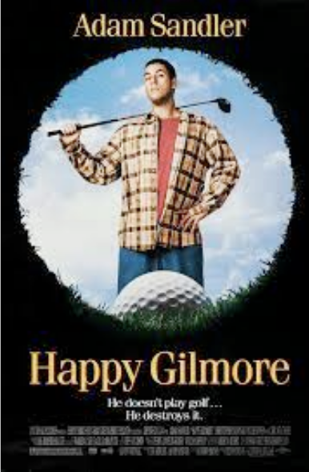Exile - Kiss You All Over
House of Pain - Jump Around
Lionel Richie, Diana Ross - Endless Love
20C.
Alice Cooper - School’s Out
War - Why Can’t We Be Friends?
Dr. John - Right Place Wrong Time
20D.
Gary Wright - Dream Weaver
Jimi Hendrix - Foxey Lady
Sweet - Ballroom Blitz